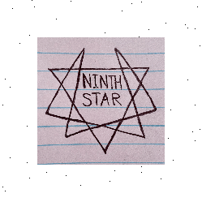

I talk more about my music below! In case you don't care, here is a back button:

I have released an Extended Play and two singles, made with BeepBox. I recommend starting with with Ninth Star, my main release. If you only try one song, pick "Alien Invasion".
They are available on Spotify, Apple Music, Amazon Music, YouTube Music, and Deezer.
I talk more about my music below! In case you don't care, here is a back button:
I had a lot of fun with BeepBox and think it's great as free software. However, I can't recommend it for serious music production due to major limitations, such as fixed verse cutoffs, which can be impossible to work around. While there are custom mods of BeepBox that address many issues, the ones I used would occasionally corrupt my work.
Capsular Star marks the end of my music releases using BeepBox. I might share more music in the future, but my current distributor, Amuse, discontinued their free service.
I mostly created my music without a strong vision for how it should be, rather focusing on how it made me feel at the time. Some sections I made with specific inspirations, like the museum music for Animal Crossing for the background beat of "Lost". Unfortunately, I was forced to lower the quality of all my music before release, making the backbeat tinny.
"Alien Invasion" is probably my most interesting piece, and one of the few songs I had a particular vision for. "Hyper" in my opinion is a good jam but a little repetitive, and kinda encapsulates how I feel when I'm excited and have a bunch of ideas.
Capsular Star was priorly unreleased music, with "Transition" being cut for its short length and rapid verse changes, and "Start" being my first song I ever made with Beepbox that I thought was lost. "Unhinged" is mostly an instrumental modification of "Drop".
I usually listen to or think of my music in an abstract way, as I often did when I made it. Maybe empty space, for example. To say, just listen to my music in a car while driving, is sometimes like hearing hot garbage. We want lyrics because we want to feel something, and lyrics are specific communication, but I picture a mood or setting when I hear my chiptune music. I made those tracks, and to some degree my website, to separate my mind from reality.